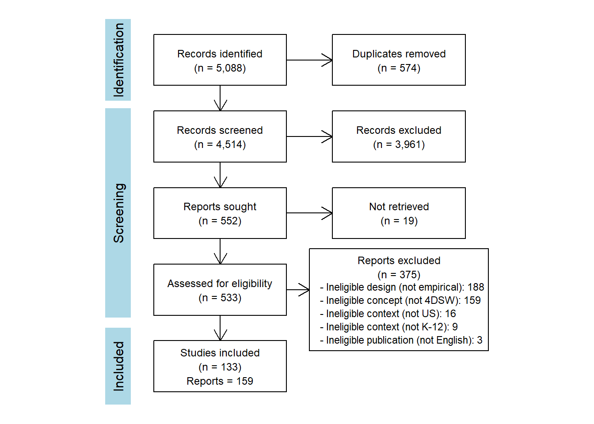

The Four-Day School Week at K-12 Schools in the United States: A Scoping Review of Empirical Research Evidence
Author Note
1
Overview
1.1
Abstract
2
Background
3
Methods
3.1
Eligibility Criteria
3.2
Information Sources
3.3
Search Strategy
3.4
Selection Process of Sources of Evidence
3.5
Data Charting Process and Items
3.6
Synthesis of Results
4
Results
4.1
Characteristics of Sources of Evidence
4.2
Types of Empirical Research Evidence
5
Discussion
6
References
7
Figures
7.1
Figure 1. Flow diagram for selection of sources of evidence
7.2
Figure 2. Number of studies done with populations in each state
8
Tables
8.1
Table 1. Eligibility criteria for including and escluding studies in the scoping review
8.2
Table 2. Characteristics of included sources of evidence on the four-day school week
8.3
Table 3. Types of available research evidence on the four-day school week
9
Additional Information
9.1
Author Contributions (CRediT - Contributor Roles Taxonomy)
9.2
Competing Interests
9.3
Support
9.4
Open Science Practices
10
Appendices
10.1
Appendix 1. List of Studies Excluded at Full-Text Eligibility Assessment
10.2
Appendix 2. List of Studies Awaiting Classification
10.3
Appendix 3. Characteristics of Included Studies
Four-Day School Week Technical Report
7
Figures
7.1
Figure 1. Flow diagram for selection of sources of evidence

7.2
Figure 2. Number of studies done with populations in each state